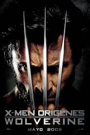

X-Men Origins: Wolverine (2009)
Información General
X-Men Origins: Wolverine es una película de superhéroes que explora el origen de Logan, interpretado por Hugh Jackman, revelando su pasado y transformación en Wolverine.
Detalles de la Película
- Director: Gavin Hood
- Fecha de Estreno: 1 de mayo de 2009
- Género: Acción, Ciencia Ficción, Superhéroes
- Duración: 107 minutos
Personajes Principales
- Logan/Wolverine: Interpretado por Hugh Jackman
- Victor Creed/Sabretooth: Interpretado por Liev Schreiber
- William Stryker: Interpretado por Danny Huston
- Gambit: Interpretado por Taylor Kitsch

Una exploración del pasado de Wolverine y sus orígenes antes de unirse a los X-Men.